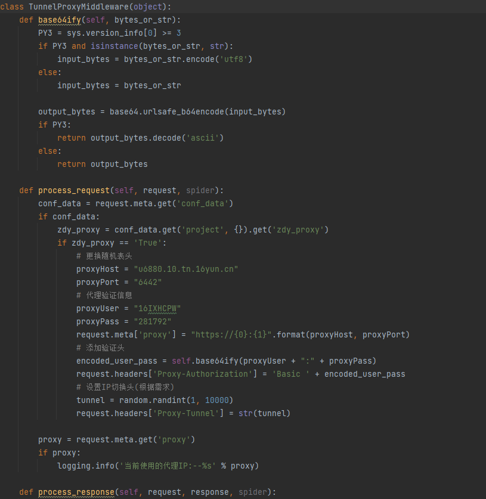
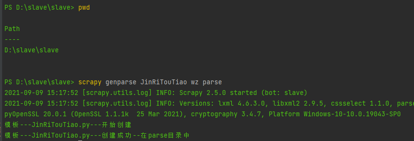

整体结构
1. items.py
items.py 配置数据存储字段
如果需要添加新字段。需要对pipelines.py同时添加到dict_content_name（评论同理）如下

slaveItem 和CommentItem


2. middlewares.py
配置不同的middlewares可以实现不同的效果。可以配置代理，请求头等
ProxyMiddleware
代理池--代理ip添加到redis中，代理真实数量不低于20个

TunnelProxyMiddleware

AbroadProxyMiddleware
如果本机开了代理，无法进行爬虫，可以尝试使用此middleware

BaiduMiddleware
可以通过百度旋转验证
3. pipelines.py
-
SlavePipeline -
用于存储的字段
-

-
在标题和正文中查找省和市字段：
-
-
重新映射认证类型（用于识别微博头条的用户认证）
-
对数据进行处理， 去掉注释 script标签等，和解决img链接不完整的问题
-

-
具体实现
-
对数据进行特殊字符处理和编码

- 通过
kafka发送数据 


4. setting.py
setting.py对整体框架的配置，对于单个爬虫的配置可以使用lib文件夹下的customSettings.py
5.conf文件夹
spider.cfg文件
-
redis 配置
-

-
配置kfk请求地址：
- kfk备用地址具体实现：

- 配置具体地址url
- 备用地址请求实现（如果第一个地址不可用，则请求下一个地址）：
- kfk备用请求：
-
当前需要运行的爬配置，爬虫编号node编号等
-

-
配置采集信源信息 ，配置爬虫配置，爬虫文件名，是否开启代理，时间过滤天数，是否使用cdh去重等
-

-
一个爬虫文件 可以对应多个域名，上图一个文件对应了三个不同的域名
-
parse_class_name为爬虫文件名字（也就是parse文件夹下对应的爬虫文件名） -
zdy_proxyTrue 表示使用代理，False不使用 -
cdh_filterTrue 表示使用 kafka 接口去重，False 不使用 -
注意：域名需要与你添加的爬虫的种子链接的域名一致
-
每新创建一个爬虫文件，对应一条或多条配置信息
-
例：
-
py http://news.fjsen.com/node_163753.htm http://taihai.fjsen.com/tw_politics.htm http://www.jianyangnews.com/node_159259.htm http://www.wysxww.com/node_173.htm
6. parse文件夹
爬虫存放目录
- 爬虫文件：
- 例:百度新闻，BBC，参考消息，大公网等等
-

-
评论文件名格式:
网站名_comment.py，comment用于识别是否为评论 
7. redis_func文件夹
- 种子文件存放地方，名字格式为
add_prifile_爬虫文件名.py - add_prifile不能打错，否则linux自动加种子的shell脚本可能识别不了是加种子的文件
- 运行的地方需要加一个限制，例如
- 也可用一个固定的数字

8. logs文件夹
-
爬虫日志存放地方
-
文件名格式和
conf文件夹下的spider.cfg相关联： -

- 格式为：
master_or_slave 加 _ 加 node_id 加 当天日期 - 例：
slave_0.log.2021-09-07 16
9. Rotate文件夹
- 用于通过百度的旋转图片验证
10.spiders文件夹
spider.py封装整体爬虫运行逻辑，如下
- 时间过滤，默认180天
- 指纹过滤，使用文章链接进行去重（指纹存在redis中），配置是否开启指纹过滤在parse文件中，
- 例：
dont_filter: 是否开启指纹过滤，默认为不开启 cdh过滤，通过调用kafka的接口实现去重，判断文章链接是否存在和是否需要重复抓取kafka接口配置和实现在lib文件夹下的crawlerApi.py的api_cdh_exist函数中
11.lib文件夹
commands创建模板使用的文件crawlerApi封装一些调用接口，如：kafka去重接口，kafka存储接口customSettings自定义配置文件，如下图，配置并发请求数DateTimeFormat封装对于任何格式的时间处理（例：三天前，时间戳等转换为正常时间格式）loaders封装一些小功能（例：对表情数据进行转换）log配置日志文件spiders_param封装对代理处理的方法tools封装时间处理方法-
useragent设置请求头 -
utils读取爬虫配置文件，并处理（文件为conf文件夹下）
使用例子
1. 创建一个新爬虫文件
- 进入
slave\slave目录下 - 执行命令
scrapy genparse JinRiTouTiao wz parse JinRiTouTiao为爬虫名称，wz为网站缩写，parse代表创建到某目录下-
创建成功如下图：
-

-
parse 文件夹下就多了一个
 爬虫文件
爬虫文件
2.新增一条配置信息
-
写到
conf文件夹下的spider.cfg下面 -
python toutiao.com = {"project": {"parse_class": "True", "parse_class_name": "JinRiTouTiao", "zdy_proxy": "True", "cdh_filter": "False", "time_filter": "30"}} -
种子：https://www.toutiao.com/api/pc/list/feed?category=pc_profile_article&token=MS4wLjABAAAAaUhxLC10yf766zvPm3RSYweRiaom2ui_ZccXzB1r4vo&max_behot_time=1630138098654
- 域名： toutiao.com
3. 修改配置
- node_id 和crawler_code一致
4. 爬虫文件解析：
-
种子解析函数，用处理从
redis读取的种子，处理成自己需要的格式，以列表形式返回 -
可以使用此方法重新构造种子
-
种子
url请求，也就是第一步请求，获取板块下面新闻链接

-
callback回调函数，具体调用，查看spider.py文件 -
response_handle处理第一步请求响应的结果，解析出板块下新闻链接

- url 为文章链接，用来去重
- published 为文章的发时间， 用于时间过滤
-
注意：调用
getDateTime对时间进行处理，转换为常规时间格式（ 2021-05-26 10:51:57 ） -
详情页请求， 就是对
response_handle函数获取到的文章的url进行请求
- 如果有下一页，则需要对下一页函数进行编辑，在
next_page函数中构造好下一页链接并返回

-
请求下一页
-
下一页的请求函数，
headers等的处理，调用json_parse函数

-
详情页内容解析，提取存储入库
-
对需要提取的字段，依次添加即可
loader.add_value(key, value)
5. 执行命令运行爬虫
-
cmd执行
scrapy crawl fpweb_1810, 1810 为你的爬虫文件的编号, 也可执行run文件 -
上述打印一些配置信息，以及爬虫编号，种子库，并发数等等
-
添加种子 运行文件
add_prifile_爬虫名.py（线上需要独立程序，不断往种子库中添加种子） -
种子添加成功后，可以看到如下图：
-
去重效果，如下图：
-
当没有可消耗的种子后，爬虫程序处于等待中...， 如下图：